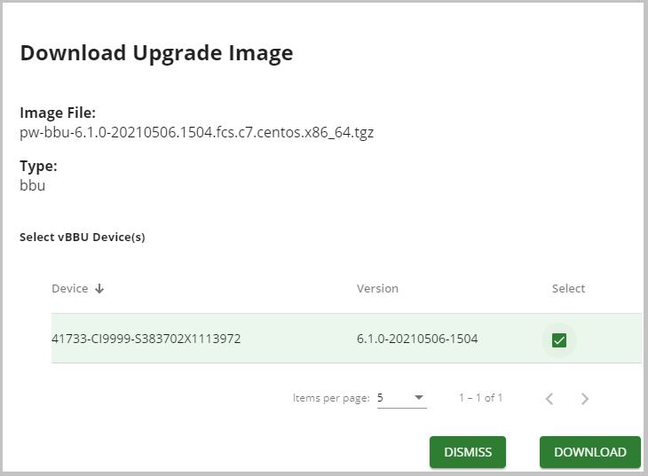

Once a software image is uploaded to the PW EMS, you can
upgrade one or more vBBU or vNode devices with it.
In the left navigation pane, click Devices > Upgrade.
In the Device Upgrade and Rollback window Image Inventory
section, find the row of the upgrade software image that you want to use to
upgrade the device and click the dotted icon for this row in
the Actions column.
Select Download from the drop-down list as shown below.
In the Download Upgrade Image dialog box, check the checkbox next to the
desired device(s) as shown below:

Click Download. The device image that you previously uploaded to the PW
EMS is now downloaded to the vBBU or vNode device and is ready to be
activated.
In the Image Inventory section, select the row of the upgrade software
image that you downloaded to the device(s) and click the dotted icon again from
the Actions column.
Click Activate.
In the Activate Upgrade Image dialog box, check the checkbox next to the
devices for which you previously downloaded the new software and click
Activate to reboot and activate these devices, as shown below.
 for this row in
the Actions column.
for this row in
the Actions column.